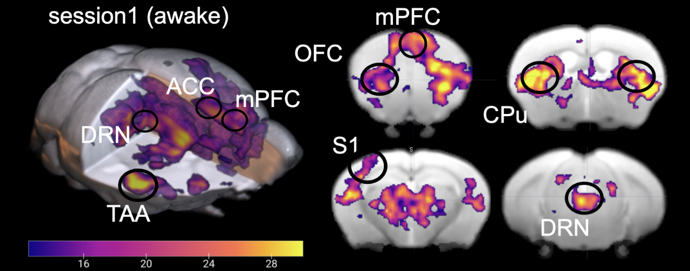
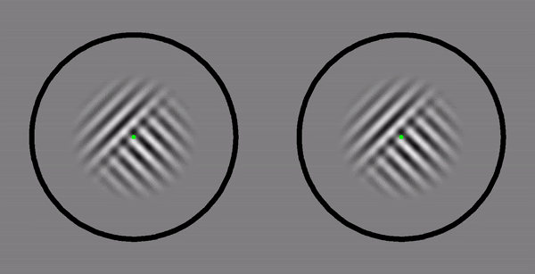

セロトニンの全脳制御 Hamada et al., Nat Commun, 2024

擬似両眼視野闘争 [Niikawa et al., Neurosci. Conscious., 2020]
宮原克典 (Ph.D), 新川拓哉 (Ph.D), 西田智史 (Ph.D) らと作成 Niikawa et al., 2020 Original codes

透明性のあるMRI研究をするためのツールのまとめ (2020)
サンプルサイズの推定方法のサンプルコード。Tools for MRI Research
神経科学が学べる場所 (2020)
のちに日本神経科学学会様によって研究室一覧としてまとめていただきました。
神経科学が学べる場所（学部/学科/大学院/受け入れ可能研究機関）スプレッドシート